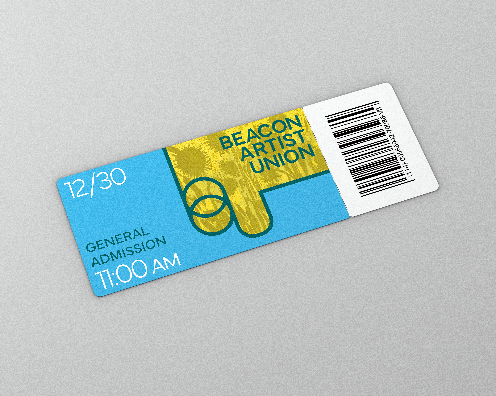
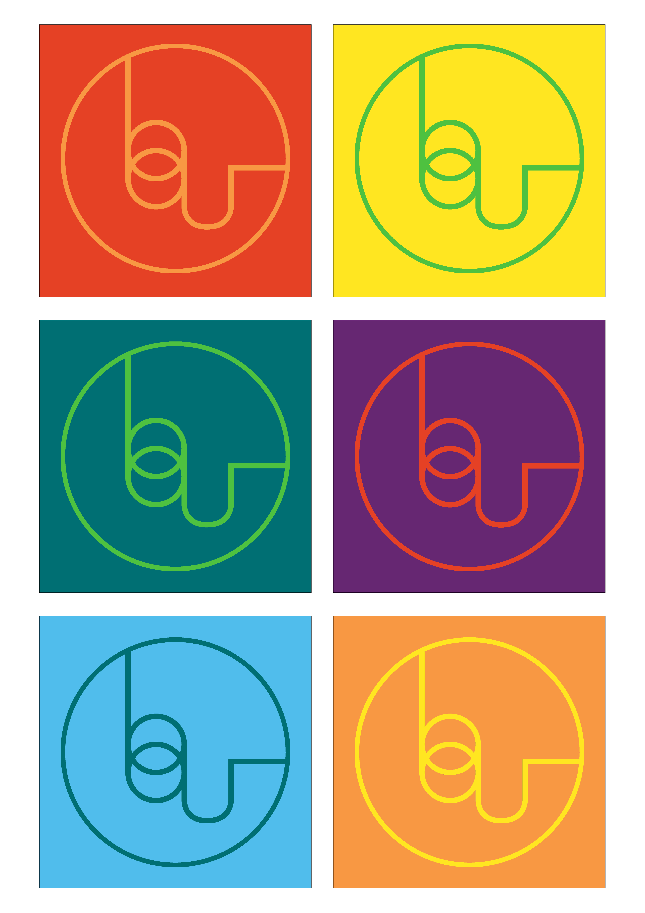

Beacon Artist Union: Identity Redesign
Branding ✸ Design
Year
2025
Client
Personal Project
Tools
InDesign, Illustrator, Photoshop
Skills
Brand Systems, Scalable Design, Info Hierarchy
This identity redesign for the Beacon Artist Union in Beacon, New York, creates a visual system that communicates openness, energy, and intentionality across platforms.
The Beacon Artist Union (BAU) is an artist-run gallery in the Hudson Valley dedicated to experimentation, collaboration, and community engagement. Its emphasis on diverse programming and artistic disciplines shaped my vision for this project.
I aimed to design an identity system that not only reflects BAU’s dynamic spirit, but also celebrates its commitment to creative growth and artistic exploration.
Starting with a simplified logo derived from the gallery’s name, I crafted a distinctive icon using custom letterforms. I then developed a vibrant color palette to evoke curiosity and discovery, using shifts in scale and color to create visual hierarchy across materials. By overlaying selected gallery artworks with subtle color treatments, the new identity highlights the diversity of creative voices while maintaining a unified and memorable brand presence.





This project pushed me to explore how visual identities adapt to various physical spaces. It furthered my understanding of typography, not just as a structural guide, but as a dynamic tool for storytelling and artistic expression. The experience reinforced the importance of scalability and intentional design in my creative practice.